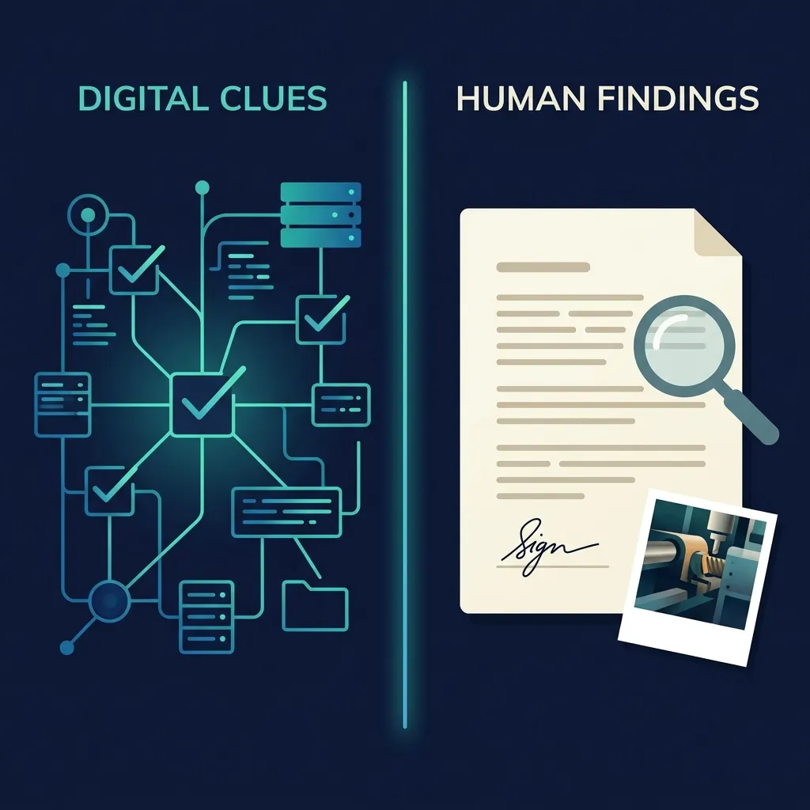

AI Generates Clues. Investigators Write Findings.
The investigation workflow that keeps AI in its place — where it assists, where it is prohibited, and the evidence requirement that closes the bypass.


An investigation has two phases. In the first, you gather every clue worth testing. In the second, a named investigator tests those clues against physical evidence and writes the finding. AI belongs in the first phase. Keep it out of the second.
The first part of this piece explained why: the AI only knows what your digital form captured, cannot see how your specific operations actually fail, and judges every decision already knowing the outcome. This part outlines the workflow that keeps AI on its side of that line, and the software design that enforces it.
Investigations are not linear. Testing a clue against physical evidence often reveals a new gap, forcing you back to gather more facts. You can query the AI for new clues at any point. The model will confidently write what looks like a conclusion. But without site verification, that conclusion is only a hypothesis. Its role in your workflow never changes: it generates hypotheses to test, not findings to file.
Gathering and Naming
In the gathering phase, the AI can search your incident database for past events where the same conditions appeared together — the same equipment class, the same shift pattern, or the same maintenance gap. This points you to clues worth investigating before you even go to the site. The system can draft interview questions and summarize a machine's maintenance history.
That value is real, but it comes with three hard limits.
The first is record quality. Finding patterns requires real field detail. If your incident forms consist mostly of generic dropdowns and missing timestamps, the AI only finds incidents that share the same words — "conveyor" or "operator error" — not those that share the actual failure mechanism. A broken data model — a database designed without field reality — produces a broken search.
The second is anchoring. While a query can cross-reference events from other sites to break site-level tunnel vision, pre-selected guesses shape the investigation before it starts. A team that spends time working through five AI suggestions may miss the sixth cause because the system never mentioned it. The AI's clues become the default boundary, and the actual investigation stays inside it.
The third is unseen failures. Large models can make analogies across industries, but they fail when the failure lies in unique local interactions. A deferred repair, a changed shift pattern, and a production bonus that altered operator incentives combine to create an unprecedented failure. The AI defaults to the standard historical patterns it recognizes and misses the unique local friction that caused the event.
In the naming phase, AI must stop. The system cannot be questioned, cannot return to the site, and cannot be held accountable when a corrective action fails. Different AI tools give different confident answers to the same incomplete record: there is no answer to defend, only answers to accept or reject. And the AI pre-selects the frame before the investigation starts. An investigator who opens with "the operator bypassed the safety guard" frames every subsequent fact through individual failure. Another who opens with "the replacement part had been on backorder for six months" frames the same facts through organizational failure. If the software is designed to ask the AI for a single cause, the model will simply default to the most common pattern in its training data — usually operator blame. Even if you configure the system to generate alternative organizational and individual frames side-by-side, the AI cannot verify which frame is true for your site. The investigator verified the facts. They must also write the story.
| Investigation task | AI role | Why |
|---|---|---|
| Find clues from similar past incidents | Assist | Getting more clues is useful — as long as the investigator verifies each one against physical evidence before putting it in the report. |
| Draft interview questions | Assist | Helps you find areas to investigate before you go to the site. |
| Summarize similar incidents from your database | Assist, with verification | The AI only retrieves old records; it does not prove what caused the new incident. |
| Name the root cause | Prohibit | No AI can be questioned, brought back to the site, or held accountable if the corrective action fails. |
| Write the official finding or report | Prohibit | The AI builds the story using patterns it learned, not verified facts. The investigator must write the actual report. |
| Audit investigator's draft for bias | Assist (passive) | The AI cannot write the report, but it can act as an automated proofreader — flagging hindsight language or weak corrective actions ("retrain employee") before submission. |
| Suggest standards for a confirmed cause | Assist (restricted) | Only after the investigator locks the verified root cause. The AI finds the relevant clause, but the investigator decides which physical control fits the plant. If the cause is not verified and locked, prohibit. |
Why Policy Fails
Telling investigators to distrust the AI does not work under daily shift pressure. Three realities collide: a looming closure deadline creates pressure to submit the report before the shift ends; auditors treat empty fields as a compliance failure; and most vendors build systems that drop the AI's guess directly into that field. The path of least resistance is clicking approve.
The result is structured fiction. As shown in the first part of this piece, when incident reports lack detail, the AI defaults to operator blame because it inherits the bias of historical reports. A fabricated corrective action that retrains the worker instead of fixing the leaking valve signals closure while the hazard stays active. Executives looking at a dashboard showing thousands of completed corrective actions will assume the risks are being managed. But if those actions came from AI guesses that no one verified, the physical hazard remains active on site while the software dashboard shows green.
An uninvestigated incident is a compliance liability, but it is at least honest. A completed corrective action with no verified cause is worse: it satisfies the compliance record but stops any further investigation, leaving the physical hazard active on the floor.
The Software Design Error
Most vendors design their software to pre-fill the root cause field with the AI's guess. The investigator sees the suggestion, clicks approve, and the AI's guess becomes the official finding. That is an error trap in the precise sense: a design that makes the wrong path easier than the right one. Converting an AI guess into an official finding takes one click. Rejecting it and typing the actual cause takes more time than the deadline allows.
The correct design works differently. The AI's suggestion lands in a separate panel, clearly marked as unconfirmed. To save the report, the investigator must type the finding by hand in a blank field. This distinction matters. A pre-filled field creates a default that most people will not change under pressure. A blank field that requires deliberate typing does not.
This is a software design decision, and it is the one most vendors get wrong. The cause field drives every corrective action that follows. How that field gets filled is not a minor setting — it is a risk management decision.
The Evidence Requirement
Forcing the investigator to type by hand is still not enough. If the software accepts any text without requiring physical evidence, you have only added a single step between the AI's guess and the official record. The investigator simply types what the AI suggested and moves on.
An evidence requirement closes that loophole. To lock the official cause field, the investigator must upload a specific piece of physical proof: a timestamped photograph, a measurement from a maintenance log, the serial number of a broken component, or a direct quote from a recorded interview. Not a description of the evidence — the evidence itself.
This does two things. First, it forces actual verification: finding a real interview quote or the right maintenance record takes more effort than ticking a box. Second, it creates a physical link between the claimed cause and the real world — something an inspector can check and a future investigator can verify.
There is one limit: standard software validation cannot verify relevance. A photo of an unrelated machine guard, or a blank PDF placeholder, still satisfies the database constraint. While multimodal models can now check if an upload matches the report topic, a human remains the final auditor. To prevent users from uploading junk files just to close the ticket, this validation must be backed by sample audits of the attachments. But even without audits, the friction is a deterrent. Clicking through is easy with a simple checkbox; it is much harder when it requires uploading an unrelated document that leaves a permanent, auditable trace.
One exception applies when work moves fast. You must address the physical hazard before finishing the paperwork. Work orders and immediate repairs should go through without waiting for the upload. The evidence requirement should block the final report, not the emergency response. Holding up a repair just to enforce paperwork leaves the hazard active longer than necessary. That is the wrong trade-off.
The Rule That Holds
Two of the three limits described in the first part will shrink over time.
Better software will capture richer field data — real timestamps, machine IDs, and environmental conditions — closing the data gap. The second limit is inconsistency: different AI models stop their "5-Why" analysis at completely different levels. You can force the software to stop at a defined level, but this creates a new limit. If you configure the system to always cut off at the supervisor level, you will never trace a failure to a corporate budget freeze. You get consistent records, but you cut off the investigation.
The third limit is the hardest to move. The AI learns from reports written after the fact. You can use clever prompts to hide the outcome while the model runs, but you cannot rewrite the training data. Because historical safety databases are dominated by reports that blame the operator, the AI defaults to that same blame whenever your incident reports lack detail.
And even if both of those gaps close entirely — if your records are clean and your software is set to stop at the right level — one fact remains: there will never be an AI you can bring back to the site, question when the corrective action (CAPA) fails, and hold accountable by name. A model can suggest where to look, but it cannot stand behind its assumptions.
AI generates clues. Investigators write findings.